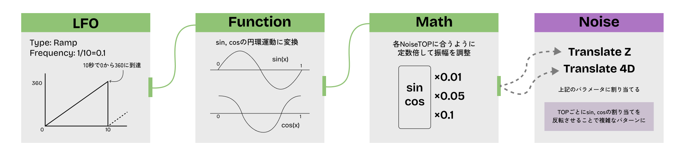
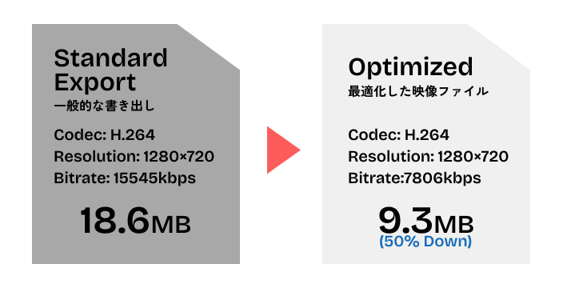

Concept
ポートフォリオサイトの顔としての「直感的な美しさ」と「自己表現」
ポートフォリオサイトのトップを飾るメインビジュアルとして、訪れた瞬間に視界をジャックして良い印象を与えることを目的として制作しました。
UIデザインにおける機能性を阻害しないよう、具象的なモチーフは避けた流体的な表現を採用。ポートフォリオの顔として、私の好む美的感覚を表現するようなビジュアルアイデンティティとして機能させています。
Technical Approach
基礎の動きとなる2つのNoiseTOPやDisplaceTOPの組み合わせは Pao Olea氏のチュートリアル動画 を参考にしました。 自分自身でもNoiseTOPの数値を調整したり、FeedbackTOP内のループにBlurを追加してより流体的な表現にしたりと、より自分好みの動きに仕上げました。
webサイトの背景として長時間表示されることを考慮し、見る人に「繰り返しの違和感」を与えない完全なシームレスなループを実装しました。
10秒間のタイムラインを単なる直線進行として扱わず、Sin/Cosを使用して円環状に推移させることで、始点と終点のパラメーターを数学的に一致させています。
さらにNoiseTOPのTranslate Z/Translate 4Dにsin, cosをそれぞれ割り当てることで周期性を感じさせない、複雑な動きを実現しました。

Sin, Cosを使用した数学的ループの実装概要
最終的なビジュアルのクオリティを決定づけるポストプロセス工程では、段階的な絵作りを行いました。言葉で説明するよりも下の映像の段階的な変化を見ていただければ分かりやすいと思います。
まず、HSV Adjust TOPとLevel
TOPを使用し、全体の彩度とコントラストを調整。次にBloomを追加することで、より鮮やかな印象を与えます。最後に色反転したEdgeを重ねることで青と紫以外の色のアクセントを加えて、より引き締まった印象にします。
Step 0 Post-Processingを行う前
Step 1 彩度とコントラストを調整
Step 2 Bloomエフェクトの追加
Step 3 反転色のエッジを追加
Web Implementation & Optimization
軽量化とビジュアル品質の両立
この映像は、webサイトの背景としてモバイル回線でも即座に再生される軽さが求められます。一方で、流体表現のような複雑なグラデーションは圧縮時にブロックノイズが発生しやすいという課題がありました。
このトレードオフを解消するため、単純なビットレート制限ではなくエンコード効率を重視した最適化を行いました。TouchDeisgnerからApple
ProResをマスターデータとして書き出した後、HandBrakeを使用。
時間をかけてエンコードすることで映像に合った最適なエンコードを実現。段階的にビットレートを下げ、軽量化とビジュアル品質の両立を行いました。
結果として1280×720pxの10秒の映像を9.3MBまで圧縮することに成功。PCモニターなどの大きい画面でも耐えうる解像感を保ちつつ、初回ロードでもストレスがないファイルサイズを実現しました。

最適化する前後のファイル情報の比較画像